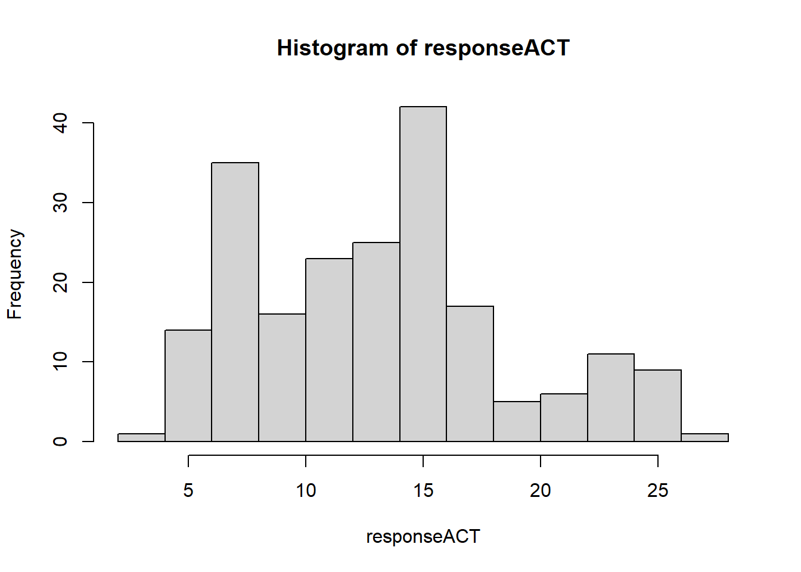

4 RMarkdown reports
We should all know what these are and how to render/generate a report or document in RMarkdown.
The next we will produce a RMarkdown document for the question we have been working on ready to add data and other sampling design information.
#general packages used
library(tidyverse)What does this tell us about how RProjects and other funky things work?
- Data import
dat <- read.csv("data/Analysis_ardMods.csv")
glimpse(dat)## Rows: 380
## Columns: 35
## $ Well <chr> "1", "2", "3", "4", "5", "6", "7", "8", "9", "1~
## $ Well.Position <chr> "A1", "A2", "A3", "A4", "A5", "A6", "A7", "A8",~
## $ Omit <chr> "false", "false", "false", "false", "false", "f~
## $ Sample.Name <chr> "1", "2", "3", "4", "5", "6", "7", "8", "9", "1~
## $ Delta.Ct.SE <lgl> NA, NA, NA, NA, NA, NA, NA, NA, NA, NA, NA, NA,~
## $ Target.Name <chr> "Gapdh", "Gapdh", "Gapdh", "Gapdh", "Gapdh", "G~
## $ Task <chr> "UNKNOWN", "UNKNOWN", "UNKNOWN", "UNKNOWN", "UN~
## $ Reporter <chr> "SYBR", "SYBR", "SYBR", "SYBR", "SYBR", "SYBR",~
## $ Quencher <chr> "None", "None", "None", "None", "None", "None",~
## $ RQ <dbl> NA, NA, NA, NA, NA, NA, NA, NA, NA, NA, NA, NA,~
## $ RQ.Min <dbl> NA, NA, NA, NA, NA, NA, NA, NA, NA, NA, NA, NA,~
## $ RQ.Max <dbl> NA, NA, NA, NA, NA, NA, NA, NA, NA, NA, NA, NA,~
## $ CT <chr> "12.909", "14.253", "13.532", "13.377", "14.249~
## $ EQ.Ct.Mean <dbl> 12.909, 14.253, 13.532, 13.377, 14.249, 15.053,~
## $ EQ.Ct.SE <lgl> NA, NA, NA, NA, NA, NA, NA, NA, NA, NA, NA, NA,~
## $ Quantity <lgl> NA, NA, NA, NA, NA, NA, NA, NA, NA, NA, NA, NA,~
## $ Delta.Ct.Mean <dbl> NA, NA, NA, NA, NA, NA, NA, NA, NA, NA, NA, NA,~
## $ Delta.Delta.Ct <dbl> NA, NA, NA, NA, NA, NA, NA, NA, NA, NA, NA, NA,~
## $ Automatic.Ct.Threshold <chr> "true", "true", "true", "true", "true", "true",~
## $ Ct.Threshold <dbl> 0.062, 0.062, 0.062, 0.062, 0.062, 0.062, 0.062~
## $ Automatic.Baseline <chr> "true", "true", "true", "true", "true", "true",~
## $ Baseline.Start <int> 3, 3, 3, 3, 3, 3, 3, 3, 3, 3, 3, 3, 3, 3, 3, 3,~
## $ Baseline.End <int> 9, 11, 10, 10, 11, 13, 10, 10, 11, 10, 9, 9, 10~
## $ Efficiency <lgl> NA, NA, NA, NA, NA, NA, NA, NA, NA, NA, NA, NA,~
## $ Tm1 <dbl> 84.395, 84.395, 84.395, 84.395, 84.395, 84.527,~
## $ Comments <lgl> NA, NA, NA, NA, NA, NA, NA, NA, NA, NA, NA, NA,~
## $ Tm2 <dbl> NA, NA, NA, NA, NA, NA, NA, NA, NA, NA, NA, NA,~
## $ Amp.Score <dbl> 1.346, 1.345, 1.352, 1.349, 1.339, 1.356, 1.347~
## $ Tm3 <dbl> NA, NA, NA, NA, NA, NA, NA, NA, NA, NA, NA, NA,~
## $ Cq.Conf <dbl> 0.920, 0.872, 0.930, 0.933, 0.974, 0.938, 0.924~
## $ MTP <chr> "N", "N", "N", "N", "N", "N", "N", "N", "N", "N~
## $ EXPFAIL <chr> "N", "N", "N", "N", "N", "N", "N", "N", "N", "N~
## $ NOISE <chr> "N", "N", "N", "N", "N", "N", "N", "N", "N", "N~
## $ NOAMP <chr> "N", "N", "N", "N", "N", "N", "N", "N", "N", "N~
## $ THOLDFAIL <chr> "N", "N", "N", "N", "N", "N", "N", "N", "N", "N~variable.names(dat)## [1] "Well" "Well.Position" "Omit"
## [4] "Sample.Name" "Delta.Ct.SE" "Target.Name"
## [7] "Task" "Reporter" "Quencher"
## [10] "RQ" "RQ.Min" "RQ.Max"
## [13] "CT" "EQ.Ct.Mean" "EQ.Ct.SE"
## [16] "Quantity" "Delta.Ct.Mean" "Delta.Delta.Ct"
## [19] "Automatic.Ct.Threshold" "Ct.Threshold" "Automatic.Baseline"
## [22] "Baseline.Start" "Baseline.End" "Efficiency"
## [25] "Tm1" "Comments" "Tm2"
## [28] "Amp.Score" "Tm3" "Cq.Conf"
## [31] "MTP" "EXPFAIL" "NOISE"
## [34] "NOAMP" "THOLDFAIL"length(unique(dat$Well.Position))## [1] 380# outcome <- dat$
table(dat$Omit)##
## false
## 4 376removedData <- dat %>%
filter(Omit != "false")
head(removedData)## Well Well.Position Omit Sample.Name Delta.Ct.SE
## 1 Analysis Type Singleplex NA
## 2 Endogenous Control Gapdh NA
## 3 RQ Min/Max Confidence Level 95.0 NA
## 4 Reference Sample 7 NA
## Target.Name Task Reporter Quencher RQ RQ.Min RQ.Max CT EQ.Ct.Mean EQ.Ct.SE
## 1 NA NA NA NA NA
## 2 NA NA NA NA NA
## 3 NA NA NA NA NA
## 4 NA NA NA NA NA
## Quantity Delta.Ct.Mean Delta.Delta.Ct Automatic.Ct.Threshold Ct.Threshold
## 1 NA NA NA NA
## 2 NA NA NA NA
## 3 NA NA NA NA
## 4 NA NA NA NA
## Automatic.Baseline Baseline.Start Baseline.End Efficiency Tm1 Comments Tm2
## 1 NA NA NA NA NA NA
## 2 NA NA NA NA NA NA
## 3 NA NA NA NA NA NA
## 4 NA NA NA NA NA NA
## Amp.Score Tm3 Cq.Conf MTP EXPFAIL NOISE NOAMP THOLDFAIL
## 1 NA NA NA
## 2 NA NA NA
## 3 NA NA NA
## 4 NA NA NA- Data visualisation
# table(dat$Well.Position)
mean(dat$Delta.Ct.Mean, na.rm = TRUE)## [1] 13.08628sd(dat$Delta.Ct.Mean, na.rm = TRUE)## [1] 5.507596hist(dat$Delta.Ct.Mean)- Data import
dat <- read.csv("data/Analysis_ardMods.csv")- Data visualisation
# table(dat$Well.Position)
mean(dat$Delta.Ct.Mean, na.rm = TRUE)## [1] 13.08628sd(dat$Delta.Ct.Mean, na.rm = TRUE)## [1] 5.507596hist(dat$Delta.Ct.Mean)
- Tidyverse approach
variable.names(dat)## [1] "Well" "Well.Position" "Omit"
## [4] "Sample.Name" "Delta.Ct.SE" "Target.Name"
## [7] "Task" "Reporter" "Quencher"
## [10] "RQ" "RQ.Min" "RQ.Max"
## [13] "CT" "EQ.Ct.Mean" "EQ.Ct.SE"
## [16] "Quantity" "Delta.Ct.Mean" "Delta.Delta.Ct"
## [19] "Automatic.Ct.Threshold" "Ct.Threshold" "Automatic.Baseline"
## [22] "Baseline.Start" "Baseline.End" "Efficiency"
## [25] "Tm1" "Comments" "Tm2"
## [28] "Amp.Score" "Tm3" "Cq.Conf"
## [31] "MTP" "EXPFAIL" "NOISE"
## [34] "NOAMP" "THOLDFAIL"#sample name
# table(dat$Sample.Name)
table(dat$Target.Name)##
## 16s B Fragilis Bft Gapdh Il-12p40 Il-18
## 4 47 47 47 47 47 47
## Il-6 Il1-b
## 47 47mean(as.numeric(dat$CT), na.rm = TRUE)## Warning in mean(as.numeric(dat$CT), na.rm = TRUE): NAs introduced by coercion## [1] 24.87021##sumarise over Target Name and find n, mean, mode, median, sd, etc for each of the target names?Nicer plots using
ggplotTidyverse approach
#tidy data
#tibble- ggplot
Much easier to work this this and tidyverse
- Read a cool sampling design/issue paper
#general packages used
library(tidyverse)We should all know what these are and how to render a report in RMarkdown. Next we will produce a RMarkdown document for the question we have been working on ready to add data and other sampling design information.
- Outcome and predictor variables
- Other study examples and code
- Other studies with same sampling design
- Other reference material.
- Read a cool sampling design/issue paper